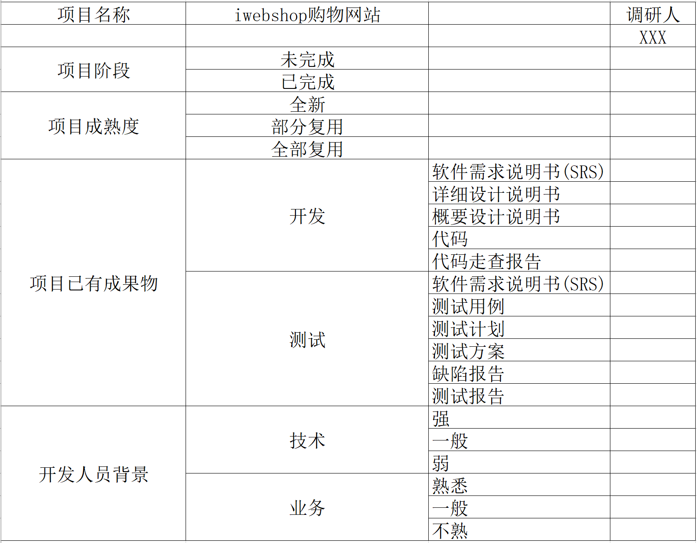
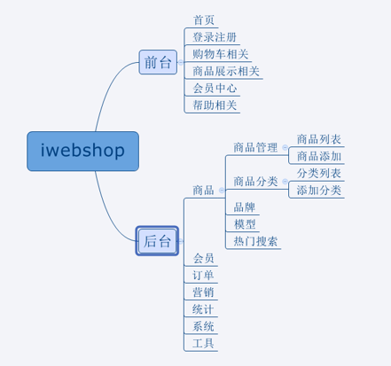
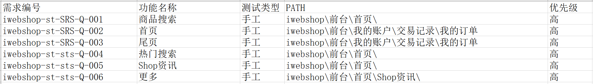

快速熟悉项目
1、了解项目架构
C/S架构
C/S 代表的是客户端/服务器（client/server），这类软件的使用者需要在本地电脑安装客户端程序，例如：QQ。
优点:安全性高。
缺点:一旦软件有更新，用户需要手动下载，较为不便。而且在没有安装客户端的电脑上，用户无法使用系统。
B/S架构
B/S 代表的是浏览器/服务器(broswer/server)，是一种通过浏览器访问服务器端数据的软件形式,例如：天猫、jd等。
优点:用户不用在本地安装软件，只要有一个浏览器即可使用产品，而且用户不用关心软件的升级更新等问题。
缺点：安全性低。
2、项目调研
可以用调查表的形式来展示：

注意: 调查表自己留着即可(可以不写)
3、项目组织架构图
项目组织架构图反映的是一个项目组织系统中各子系统之间和各元素之间的组织关系，反映的是各个模块以及各个模块下面的子模块，子模块下面的子模块之间的组织关系。

- 价值：对项目有一个全局的认识
4、测试范围列表
需求名称(编号) 功能 测试类型 PATH(路径) 优先级

- 价值：保证测试用例不遗漏